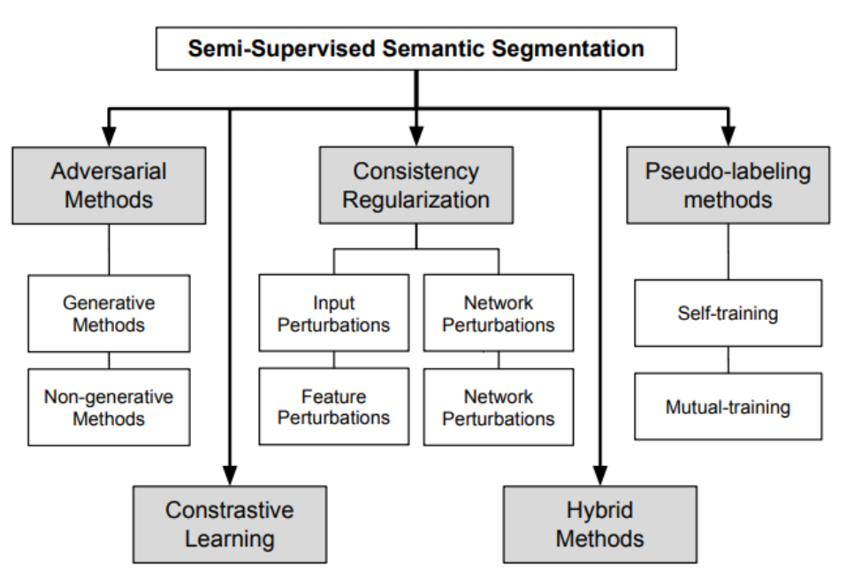
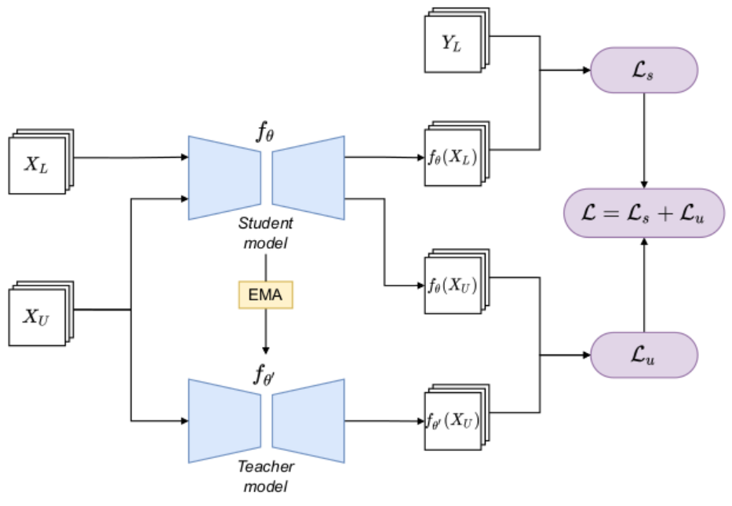
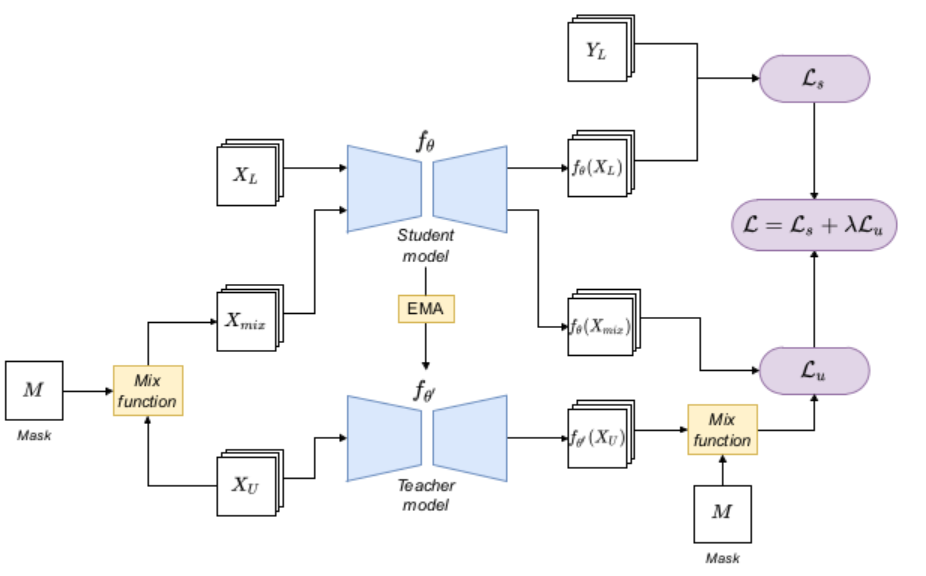
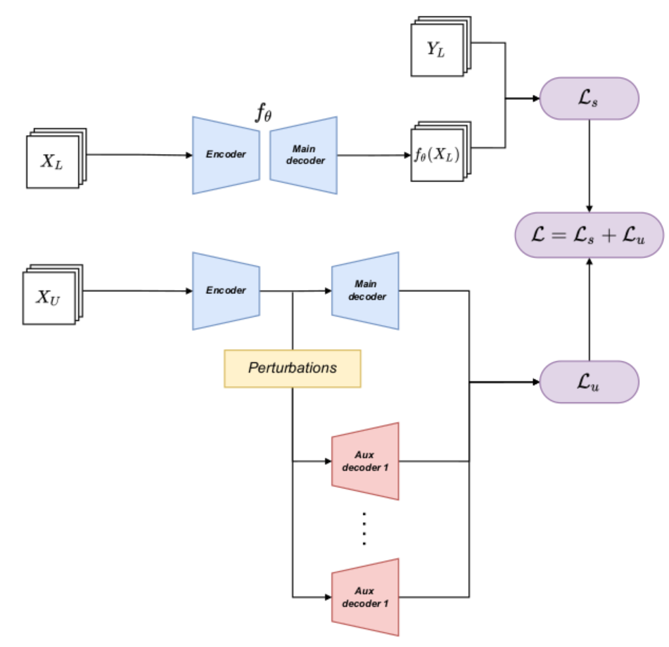
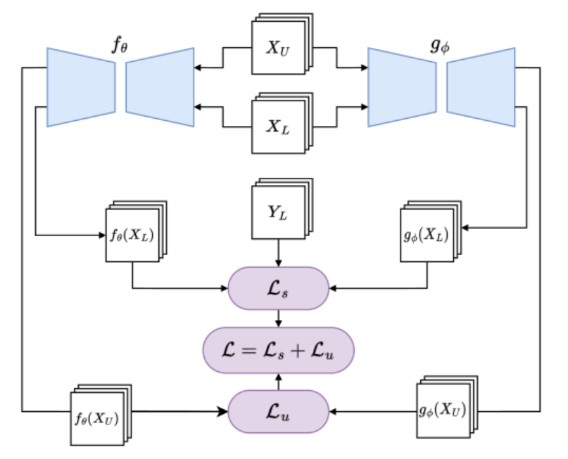

Introduction
(Before we start this blog, I must clarify that it serves as an initial introduction to the "Mean Teacher" framework. I may enhance this article later if I come across intriguing insights or new information.)
Obtaining a sufficiently large labeled dataset for supervised learning can be quite challenging, primarily due to the cost involved. This challenge becomes even more pronounced in fields like medical imaging, where annotating data requires domain-specific expertise and experimentation. Hence, our focus shifts towards Semi-Supervised Learning.
Within the realm of Semi-Supervised Learning, various algorithms have emerged, each founded on distinct methodologies, such as the following figures:  In this discussion, we'll center our attention on the second method: Consistency Regularization. The "Mean Teacher" concept plays a pivotal role in this context, serving as a fundamental cornerstone upon which many other algorithms are built.
How does mean teacher work
Here is the basic frame of mean teacher:  Within the Mean Teacher framework, there are two same models employed with distinct training strategies: the student model and the teacher model.
The workflow of the Mean Teacher framework follows these steps:
Adding Noise: Noise is introduced to the input data, both for labeled and unlabeled data.
Model Training:
- Unlabeled Data: The unlabeled data is passed through two models, the student model and the teacher model.
- Labeled Data: The labeled data is exclusively fed into the student model.
Classification Loss Calculation: The framework calculates the classification loss by comparing the results obtained from the student model with the actual labels. This loss quantifies the error in the model's predictions.
Consistency Cost Calculation: The consistency cost is computed between the student model and the teacher model. This cost is typically defined as the Mean Squared Error (MSE) between the predictions of the two models. It measures the similarity or consistency of their predictions on the same input data:
\[ J(\theta)=E_{x,\eta',\eta}[|f(x,\theta',\eta')-f(x,\theta,\eta)|^2] \]
where: \(x\) is input data, \(\theta'\) and \(\theta\) mean the weights of two models, \(\eta'\) and \(\eta\) are the noise * The total loss in the Mean Teacher framework combines two different losses above: the classification loss and the consistency cost.
update the weights of teacher model with the following form:
\[ \theta'_t = \alpha\theta'_{t-1}+(1-\alpha)\theta_t \]
where \(\alpha\) is a smoothing coefficient hyper parameter.
Some detail about mean teacher
Details about Noise:
In the Mean Teacher framework, various types of noise are introduced to the input data to enhance the robustness of the model. These include:
- Random Shift: Randomly shifting the input data to introduce positional variability.
- Random Horizontal Flip: Applying random horizontal flips to the input data to create mirrored versions.
- Gaussian Noise: Adding Gaussian noise to the input layer, which introduces random variations.
- Dropout: Applying dropout to the network, which temporarily deactivates random neurons during training, forcing the model to learn more robust features.
Details about Hyperparameters:
- Consistency Cost (L2 Loss): The consistency cost, which measures the similarity between the student and teacher model predictions, uses L2 loss. The weight of this cost increases gradually from 0 to its final value during the first 80 epochs of training.
- Alpha (α): The hyperparameter α controls the rate at which the teacher model's weights are updated. Initially, it is set to 0.99, and later it increases to 0.999. This choice is based on the observation that the student model tends to improve more rapidly in the early stages of training. A smaller α allows the teacher model to forget old and potentially inaccurate student model weights more quickly. As training progresses and the student model improves more slowly, a larger α allows the teacher model to retain longer-term memory and benefit from the accumulated knowledge.
Details about Predictions:
The authors note that both the student and teacher models can be used for making predictions. However, after training, the predictions generated by the teacher model are more likely to be correct.
Why mean teacher
Compare with Temporal Ensembling
The "Mean Teacher" concept can be seen as an improvement over Temporal Ensembling. In Temporal Ensembling, a similar concept of Exponential Moving Average (EMA) is utilized, but it employs predictions for the averaging process. This approach means that
- each target update occurs once per epoch, which can become time-consuming, especially with large datasets.
- The process of incorporating the learned information into the training procedure can be sluggish.
To address this challenge, Mean Teacher introduces a novel approach. Instead of averaging based on predictions, it performs averaging on the model's weight parameters. This innovation allows for a more efficient and streamlined integration of learned information during the training process.
Its influence
Given that the paper is now five years old, even though it achieved SOTA with some dataset in some tasks, we don't care about it, instead, we are more interested in assessing its lasting influence and impact on the field.
As we show in the "Introduction" above:
The "Mean Teacher" serves as a fundamental cornerstone upon which many other algorithms are built.
Here, I will provide a brief introduction to some of these concepts or topics. For detailed information on the specific paper, please refer to "Inference[1]."
Input perturbations
The basic frame looks like: 
It is very similar to the Mean Teacher model, incorporates input perturbations in the unlabeled data by means of the mix function and the M mask. “Mix” here is a function, which obtains two images and returns the combination of them.
the main data augmentation methods are:
CutOut and CutMix(2020):
CutOut: CutOut discards the rectangular section marked by the mask in the training process. Then, the consistency between the predictions of the original image and the modified image is forced by the regularization term
CutMix: Use rectangular section marked to combine two images, one is from the original image, the other is from another image
ClassMix: Similar as CutMix, but here toward to the rectangular section marked, use the same class-image
ComplexMix: proposes the combined use of CutMix and ClassMix
Feature perturbations
 That is: extends a supervised segmentation model with an encoder-decoder structure with some auxiliary decoders,
- First, a supervised training is carried out with the available labeled data, using the main decoder.
- And then, when inputting the unlabeled data, the encoder output is perturbed in different ways, resulting in different versions of the same features, which are directed to different auxiliary decoders.
- Finally, consistency between the outputs of the auxiliary decoders is enforced, favoring similar predictions for different perturbed versions of the encoder output features.
(Shortly: use labeled data to train encoder-decoder, and then do some perturbations in the output of encoder, use regularization to make the results from different decoder same)
Network perturbations
 The model is based on two models.
Similar to the Mean Teacher model, but here, training of the two networks involved is carried out in a parallel and independent way, instead of updating one ac- cording to the EMA of the other. These two models:
- use different initial-methods to initial the weight of the model.
- but always use regularization-term to make the predictions from different models the same.
Conclusion
When embarking on a new project involving Semi-Supervised Learning, it's worth considering that the "mean teacher" framework may not necessarily be the optimal choice, but rather an alternative to explore.
Inference
[1] A Survey on Semi-Supervised Semantic Segmentation